일반기계기사 (2021-09-12 기출문제)
1과목: 재료역학
1. 그림과 같이 20cm x 10cm의 단면을 갖고 양단이 회전단으로 된 부재가 중심축 방향으로 압축력 P가 작용하고 있을 때 장주의 길이가 2m라면 세장비는 약 얼마인가?
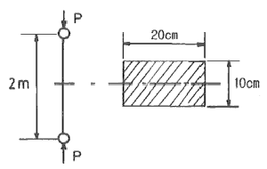
- 89
- 69
- 49
- 29
(정답률: 68%)

2. 그림과 같이 지름 10cm의 원형 단면보 끝단에 3.6kN의 하중을 가하고 동시에 1.8kN·m의 비틀림 모멘트를 작용시킬 때 고정단에 생기는 최대전단응력은 약 몇 MPa인가?
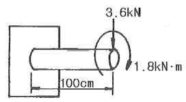
- 10.1
- 20.5
- 30.3
- 40.6
(정답률: 41%)
3. 지름이 25mm이고 길이가 6m인 강봉의 양쪽단에 100kN의 인장력이 작용하여 6mm가 늘어났다. 이때의 응력과 변형률은? (단, 재료는 선형 탄성 거동을 한다.)
- 203.7 MPa, 0.01
- 203.7 kPa, 0.01
- 203.7 MPa, 0.001
- 203.7 kPa, 0.001
(정답률: 69%)
4. 공학적 변형률(engineering strain) e와 진변형률(true strain) ε사이의 관계식으로 옳은 것은?
- ε = In(e+1)
- ε = exIn(e)
- ε = In(e)
- ε = 3e
(정답률: 71%)
5. 그림과 같이 전길이에 걸쳐 균일 분포하중 ω를 받는 보에서 최대처짐 δmax를 나타내는 식은? (단, 보의 굽힘 강성계수는 EI이다.)
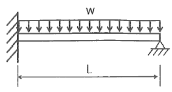
- ωL4/64EI
- ωL4/128.5EI
- ωL4/184.6EI
- ωL4/192EI
(정답률: 61%)
6. 보에서 원형과 정사각형의 단면적이 같을 때, 단면계수의 비Z1/Z2는 약 얼마인가? (단, 여기에서 Z1은 원형 단면의 단면계수, Z2는 정사각형 단면의 단면계수이다.)
- 0.531
- 0.846
- 1.182
- 1.258
(정답률: 62%)
7. 그림에서 A지점에서의 반력을 구하면 약 몇 N인가?
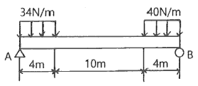
- 118
- 127
- 132
- 139
(정답률: 66%)
8. 그림과 같은 삼각형 분포하중을 받는 단순보에서 최대 굽힘 모멘트는? (단, 보의 길이는 L이다.)
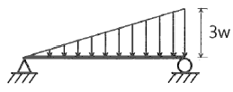
- ωL2/2√2
- ωL2/3√3
- ωL2/4√2
- ωL2/9√3
(정답률: 46%)
9. 그림과 같이 단순지지되어 중앙에서 집중하중 P를 받는 직사각형 단면보에서 보의 길이는 L, 폭이 b, 높이가 h일 때, 최대굽힘응력(σmax)과 최대전단응력(τmax)의 비 (σmax/τmax)는?
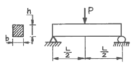
- h/L
- (2h)/L
- L/h
- (2L)/h
(정답률: 40%)
10. 외경이 내경의 2배인 중공축과 재질과 길이가 같고 지름이 중공축의 외경과 같은 중실축이 동일 회전수에 동일 동력을 전달한다면, 이때 중실축에 대한 중공축의 비틀림각의 비 (중공축 비틀림각/중실축 비틀림각)는?
- 1.07
- 1.57
- 2.07
- 2.57
(정답률: 61%)
11. 동일한 전단력이 작용할 대 원형 단면 보의 지름을 d에서 3d로 하면 최대 전단응력의 크기는? (단, τmax는 지름이 d일 때의 최대전단응력이다.)
- 9τmax
- 3τmax
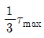
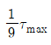
(정답률: 66%)
12. 그림과 같이 반지름이 5cm인 원형 단면을 갖는 ㄱ자 프레임에서 A점 단면의 수직응력(σ)은 약 몇 MPa인가?
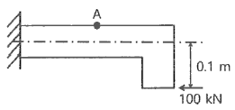
- 79.1
- 89.1
- 99.1
- 109.1
(정답률: 40%)
13. 그림과 같이 재료가 동일한 A, B의 원형 단면봉에서 같은 크기의 압축하중 F를 받고 있다. 응력은 각 단면에서 균일하게 분포된다고 할 때 저장되는 탄성 변형 에너지의 비 UB/UA는 얼마가 되겠는가?
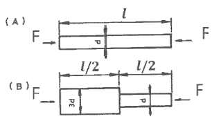
- 5/9
- 1/3
- 9/5
- 3
(정답률: 61%)
14. 정사각형 단면의 짧은 봉에서 축방향(z방향) 압축 응력 40MPa를 받고 있고, x방향과 y방향으로 압축 응력 10MPa씩 받을 때 축방향 길이 감소량은 약 몇 mm인가? (단, 세로탄성계수 100GPa, 포아송 비 0.25, 단면의 한변은 120mm, 축방향 길이는 200mm이다.)
- 0.003
- 0.03
- 0.007
- 0.07
(정답률: 26%)
15. 그림과 같은 단붙이 봉에 인장하중 P가 작용할 때, 축 지름 비d1:d2=4:3으로 하면 d1부분에 발생하는 응력 σ1과 d2부분에 발생하는 응력 σ2의 비는?
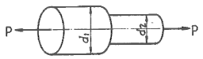
- σ1:σ2=9:16
- σ1:σ2=16:9
- σ1:σ2=4:9
- σ1:σ2=9:4
(정답률: 63%)
16. 높이 30cm, 폭20cm의 직사각형 단면을 가진 길이 3m의 목제 외팔보가 있다. 자유단에 최대 몇kN의 하중을 작용시킬 수 있는가? (단, 외팔보의 허용굽힘응력은 15MPa이다.)
- 15
- 25
- 35
- 45
(정답률: 59%)
17. 2축 응력 상태의 재료 내에서 서로 직각 방향으로 400MPa의 인장응력과 300MPa의 압축응력이 작용할 때 재료 내에 생기는 최대 수직응력은 몇MPa인가?
- 300
- 350
- 400
- 500
(정답률: 50%)
18. 그림과 같은 외팔보에 집중하중 P=50kN이 작용할 때 자유단의 처짐은 약 몇 cm인가? (단, 보의 세로탄성계수는 200GPa, 단면 2차 모멘트는 105cm4이다.)
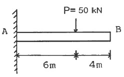
- 2.4
- 3.6
- 4.8
- 6.4
(정답률: 46%)
19. 그림과 같은 보가 분포하중과 집중하중을 받고 있다. 지점 B에서의 반력의 크기를 구하면 몇kN인가?
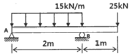
- 28.5
- 40.5
- 52.5
- 55.5
(정답률: 66%)
20. 회전수 120rpm으로 35kW의 동력을 전달하는 원형 단면축은 길이가 2m이고, 지름이 6cm이다. 이 축에서 발생한 비틀림 각도는 약 몇 rad인가? (단, 이 재료의 가로탄성계수는 83GPa이다.)
- 0.019
- 0.036
- 0.⑤3
- 0.078
(정답률: 64%)
2과목: 기계열역학
21. 섭씨온도 -40˚C를 화씨온도(˚F)로 환산하면 약 얼마인가?
- -16˚F
- -24˚F
- -32˚F
- -40˚F
(정답률: 69%)
22. 역카르노 사이클로 운전하는 이상적인 냉동사이클에서 응축기 온도가 40˚C, 증발기 온도가 -10˚C이면 성능 계수는 약 얼마인가?
- 4.26
- 5.26
- 3.56
- 6.56
(정답률: 68%)
23. 두께 1cm, 면적 0.5m2의 석고판의 뒤에 가열판이 부착되어 1000W의 열을 전달한다. 가열판의 뒤는 완전히 단열되어 열은 앞면으로만 전달된다. 석고판 앞면의 온도는 100˚C이고 석고의 열전도율은 0.79 W/(m·K)일 때 가열판에 접하는 석고면의 온도는 약 몇 ˚C인가?
- 110
- 125
- 140
- 155
(정답률: 49%)
24. 그림과 같은 증기압축 냉동사이클이 있다. 1, 2, 3 상태의 엔탈피가 다음과 같을 때 냉매의 단위 질량당 소요 동력 (WC)과 냉동능력(qL)은 얼마인가? (단, 각 위치에서의 엔탈피(h)값은 각각 h1=178.16kJ/kg, h2=210.38kJ/kg, h3=74.53kJ/kg이고, 그림에서 T는 온도, S는 엔트로피를 나타낸다.)
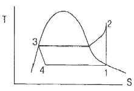
- WC=32.22kJ/kg, qL=103.63kJ/kg
- WC=32.22kJ/kg, qL=135.85kJ/kg
- WC=103.63kJ/kg, qL=32.22kJ/kg
- WC=135.85kJ/kg, qL=32.22kJ/kg
(정답률: 38%)
25. 어떤 기체의 정압비열이 2436J/(kg·K)이고, 정적비열이 1943J/(kg·K)일 때 이 기체의 비열비는 약 얼마인가?
- 1.15
- 1.21
- 1.25
- 1.31
(정답률: 69%)
26. 30˚C, 100kPa의 물을 800kPa까지 압축하려고 한다. 물의 비체적이 0.001m3/kg로 일정하다고 할 때, 단위 질량당 소요된 일(공업일)은 약 몇J/kg인가?
- 167
- 602
- 700
- 1412
(정답률: 68%)
27. 다음의 열기관이 열역학 제1법칙과 제2법칙을 만족하면서 출력일(W)이 최대가 될 때, W의 값으로 옳은 것은? (단, T는 온도, Q는 열량을 나타낸다.)
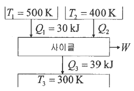
- 34 kJ
- 29 kJ
- 24 kJ
- 19 kJ
(정답률: 42%)
28. 10kg의 증기가 온도 50˚C, 압력 38kPa, 체적 7.5m3일 때 총 내부에너지는 6700kJ이다. 이와 같은 상태의 증기가 가지고 있는 엔탈피는 약 몇 kJ인가?
- 8346
- 7782
- 7304
- 6985
(정답률: 65%)
29. 이상기체인 공기 2kg이 300K, 600kPa상태에서 500K, 400kPa 상태로 변화되었다. 이 과정 동안의 엔트로피 변화량은 약 몇 kJ/K인가? (단, 공기의 정적비열과 정압비열은 각각 0.717kJ/(kg·K)과 1.004kJ/(kg·K)로 일정하다.)
- 0.73
- 1.83
- 1.02
- 1.26
(정답률: 39%)
30. 피스톤-실린더로 구성된 용기 안에 300kPa, 100˚C상태의 CO2가 0.2m3들어있다. 이 기체를 "PV1.2=일정"인 관계가 만족되도록 피스톤 위에 추를 더해가며 온도가 200˚C가 될 때까지 압축하였다. 이 과정 동안 기체가 외부로부터 받은 일을 구하면 약 몇 kJ인가? (단, P는 압력, V는 부피이고, CO2의 기체상수는 0.189kJ/(kg·K)이며 CO2는 이상기체처럼 거동한다고 가정한다.)
- 20
- 60
- 80
- 120
(정답률: 42%)
31. 어느 가역 상태변화를 표시하는 그림과 같은 온도(T)-엔트로피(S) 선도에서 빗금으로 나타낸 부분의 면적은 무엇을 의미하는가?
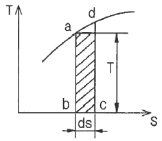
- 힘
- 열량
- 압력
- 비체적
(정답률: 65%)
32. 마찰이 없는 피스톤이 끼워진 실린더가 있다. 이 실린더 내 공기의 초기 압력은 500kPa이며 초기체적은 0.⑤m3이다. 실린더를 가열하였더니 실린더내 공기가 열손실 없이 체적이 0.1m3으로 증가되었다. 이 과정에서 공기가 행한 일은 몇kJ인가? (단, 압력은 변하지 않았다.)
- 10
- 25
- 40
- 100
(정답률: 67%)
33. 어느 증기터빈에 0.4kg/s로 증기가 공급되어 260kW의 출력을 낸다. 입구의 증기 엔탈피 및 속도는 각각 3000kJ/kg, 720m/s, 출구의 증기 엔탈피 및 속도는 각각 2500kJ/kg, 120m/s이면, 이 터빈의 열손실은 약 몇 kW가 되는가?
- 15.9
- 40.8
- 20.4
- 104
(정답률: 57%)
34. 다음 중 서로 같은 단위를 사용할 수 없는 것은?
- 열량(heat transfer)과 일(work)
- 비내부에너지(specific intrnal energy)와 비엔탈피(specific enthalpy)
- 비엔탈피(specific enthalpy)와 비엔트로피(specific entropy)
- 비열(specific heat)과 비엔트로피(specific entropy)
(정답률: 47%)
35. 온도 100˚C의 공기 0.2kg이 압력이 일정한 과정을 거쳐 원래 체적의 2배로 늘어났다. 이때 공기에 전달된 열량은 약 몇 kJ인가? (단, 공기는 이상기체이며 기체상수는 0.287kJ/(kg·K), 정적비열은 0.718kJ/(kg·K)이다.)
- 75.0kJ
- 8.93kJ
- 21.4kJ
- 34.7kJ
(정답률: 40%)
36. 4kg의 공기를 압축하는데 300kJ의 일을 소비함과 동시에 110kJ의 열량이 방출되었다. 공기온도가 초기에는 20˚C이었을 때 압축 후의 공기온도는 약 몇 ˚C인가? (단, 공기는 정적비열이 0.716kJ/(kg·K)으로 일정한 이상기체로 간주한다.)
- 78.4
- 71.7
- 93.5
- 86.3
(정답률: 56%)
37. 온도가 T1인 고열원으로부터 온도가 T2인 저열원으로 열전도, 대류, 복사 등에 의해 Q만큼 열전달이 이루어졌을 때 전체 엔트로피 변화량을 나타내는 식은?
- T1-T2/Q(T1×T2)
- Q(T1+T2)/T1×T2
- Q(T1-T2)/T1×T2
- T1+T2/Q(T1×T2)
(정답률: 61%)
38. 14.33W의 전등을 매일 7시간 사용하는 집이 있다. 30일 동안 약 몇 kJ의 에너지를 사용하는가?
- 10830
- 15020
- 17420
- 22840
(정답률: 68%)
39. 다음 중 이상적인 증기 터빈의 사이클인 랭킨 사이클을 옳게 나타낸 것은?
- 가역단열압축 → 정압가열 → 가역단열팽창 → 정압냉각
- 가역단열압축 → 정적가열 → 가역단열팽창 → 정적냉각
- 가역등온압축 → 정압가열 → 가역등온팽창 → 정압냉각
- 가역등온압축 → 정적가열 → 가역등온팽창 → 정적냉각
(정답률: 58%)
40. 랭킨 사이클의 열효율 증대 방법에 해당하지 않는 것은?
- 복수기(응축기) 압력 저하
- 보일러 압력 증가
- 터빈 입구 온도 저하
- 보일러에서 증기 온도 상승
(정답률: 58%)
3과목: 기계유체역학
41. 평판을 지나는 경계층 유동에서 속도 분포가 경계층 바깥에서는 균일 속도, 경계층 내에서는 다음과 같이 주어질 때 경계층 배제두께(displacement thickness) δ*와 경계층 두께 δ의 관계식으로 옳은 것은? (단, u는 평판으로부터 거리 y에 따른 경계층 내의 속도분포, U는 경계측 밖의 균일 속도이다.)
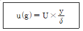
- δ*=δ/4
- δ*=δ/3
- δ*=δ/2
- δ*=2δ/3
(정답률: 38%)
42. 관속에서 유체가 흐를 때 유동이 완전한 난류라면 수두손실은?
- 유체 속도에 비례한다.
- 유체 속도의 제곱에 비례한다.
- 유체 속도에 반비례한다.
- 유체 속도의 제곱에 반비례한다.
(정답률: 58%)
43. 원관 내부의 흐름이 층류 정상 유동일 때 유체의 전단응력 분포에 대한 설명으로 알맞은 것은?
- 중심축에서 0이고, 반지름 방향 거리에 따라 선형적으로 증가한다.
- 관 벽에서 0이고, 중심축까지 선형적으로 증가한다.
- 단면에서 중심축을 기준으로 포물선 분포를 가진다.
- 단면 전체에서 일정하게 나타난다.
(정답률: 60%)
44. 2m/s의 속도로 물이 흐를 때 피토관 수두높이 h는?
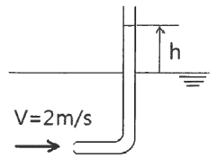
- 0.⑤3m
- 0.102m
- 0.204m
- 0.412m
(정답률: 65%)
45. 그림과 같이 매우 큰 두 저수지 사이에 터빈이 설치되어 동력을 발생시키고 있다. 물이 흐르는 유량은 50m3/min이고, 배관의 마찰손실수두는 5m, 터빈의 작동효율이 90%일 때 터빈에서 얻을 수 있는 동력은 약 몇 kW인가?
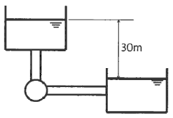
- 318
- 286
- 184
- 204
(정답률: 46%)
46. 체적이 1m3인 물체의 무게를 물 속에서 측정하였을 때4000N이다. 이 물체의 비중은?
- 2.11
- 1.85
- 1.62
- 1.41
(정답률: 51%)
47. 어떤 액체 기둥 높이 25cm와 수은 기둥 높이 4cm에 의한 압력이 같다면 이 액체의 비중은 약 얼마인가? (단, 수은의 비중은 13.6이다.)
- 7.35
- 6.36
- 4.04
- 2.18
(정답률: 62%)
48. 해수 내에서 잠수함이 2.5m/s로 끌며 움직이고 있는 지름이 280mm인 구형의 음파 탐지기에 작용하는 항력을 풍동실험을 통해 예측하려고 한다. 지름이 140mm인 구형 모형을 사용한 풍동실험에서 Reynolds수를 같게 하여 실험하였을 때, 풍동에서 측정한 항력에 몇 배를 곱해야 해수 내 음파탐지기의 항력을 구할 수 있는가? (단, 바닷물의 평균 밀도는 1025kg/m3, 동점성계수는 1.4×10-6m2/s이며, 공기의 밀도는 1.23kg/m3, 동점성계수는 1.4×10-5m2/s로 한다. 또한, 이 항력 연구는 다음 식이 성립한다.)
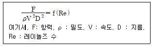
- 1.67배
- 3.33배
- 6.67배
- 8.33배
(정답률: 39%)
49. 실온에서 엔진오일은 절대점성계수 0.12kg/(m·s), 밀도 800kg/m3이고, 공기는 절대점성계수 1.8×10-5kg/(m·s), 밀도 1.2kg/m3이다. 엔진오일의 동점성계수는 공기의 동점성계수의 약 몇 배인가?
- 5
- 10
- 15
- 20
(정답률: 63%)
50. Buckingham의 파이(pi)정리를 바르게 설명한 것은? (단, k는 변수의 개수, r은 변수를 표현하는데 필요한 최소한의 기준차원의 개수이다.)
- (k-r)개의 독립적인 무차원수의 관계식으로 만들 수 있다.
- (k+r)개의 독립적인 무차원수의 관계식으로 만들 수 있다.
- (k-r+1)개의 독립적인 무차원수의 관계식으로 만들 수 있다.
- (k+r+1)개의 독립적인 무차원수의 관계식으로 만들 수 있다.
(정답률: 54%)
51. 그림과 같이 단면적 A1은 0.4m2, 단면적 A2는 0.1m2인 동일 평면상의 관로에서 물의 유량이 1000L/s일 때 관을 고정시키는 데 필요한 x방향의 힘Fx의 크기는 약 몇 N인가? (단, 단면 1과 2의 높이차는 1.5m이고, 단면 2에서 물은 대기로 방출되며, 곡관의 자체 중량, 곡관 내부 물의 중량 및 곡관에서의 마찰손실은 무시한다.)
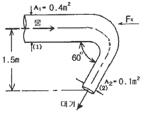
- 10159
- 15358
- 20370
- 24018
(정답률: 24%)
52. 다음 중 점성계수를 측정하는 데 적합한 것은?
- 피토관(pitot tube)
- 슈리렌법(schlieren method)
- 벤투리미터(venturi meter)
- 세이볼트법(saybolt method)
(정답률: 52%)
53. 다음 중 밀도가 가장 큰 액체는?
- 1g/cm3
- 비중 1.5
- 1200kg/m3
- 비중량 8000N/m3
(정답률: 57%)
54. 점성을 지닌 액체가 지름 4mm의 수평으로 놓인 원통형 튜브를 12×10-6m3/s의 유량으로 흐르고 있다. 길이 1m에서의 압력손실은 약 몇 kPa인가? (단, 튜브의 입구로부터 충분히 멀리 떨어져 있어서 유체는 축방향으로만 흐르며 유체의 밀도는 1180kg/m3, 점성계수는 0.0045N·s/m2이다.)
- 7.59
- 8.59
- 9.59
- 10.59
(정답률: 55%)
55. 그림과 같은 원통 주위의 포텐셜 유동이 있다. 원통 표면상에서 상류 유속(v)과 동일한 크기의 유속이 나타나는 위치(θ)는?
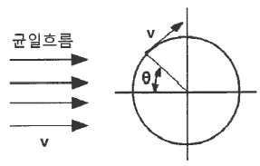
- 90˚
- 30˚
- 45˚
- 60˚
(정답률: 30%)
56. 지름 0.1mm, 비중 2.3인 작은 모래알이 호수 바닥으로 가라앉을 때, 잔잔한 물 속에서 가라앉는 속도는 약 몇 mm/s인가? (단, 물의 점성계수는 1.12×10-3N·s/m2이다.)
- 6.32
- 4.96
- 3.17
- 2.24
(정답률: 21%)
57. 어떤 액체의 밀도는 890kg/m3, 체적 탄성계수는 2200MPa이다. 이 액체 속에서 전파되는 소리의 속도는 약 몇 m/s인가?
- 1572
- 1483
- 981
- 345
(정답률: 57%)
58. 다음 중 옳은 설명을 모두 고른 것은?
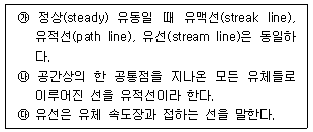
- ㉮,㉯
- ㉮,㉰
- ㉯,㉰
- ㉮,㉯,㉰
(정답률: 35%)
59. 그림과 같이 폭 2m, 높이가 3m인 평판이 물 속에 수직으로 잠겨있다. 이 평판의 한쪽 면에 작용하는 전체 압력에 의한 힘은 약 몇 kN인가?
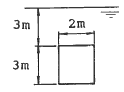
- 88
- 175
- 233
- 265
(정답률: 53%)
60. 2차원 (r, θ) 평면에서 연속방정식은 다음과 같이 주어진다. 비압축성 유동이고 반지름 방향의 속도 Vr은 반지름방향의 거리 r만의 함수이며, 접선방향의 속도 Vθ=0일 때, Vr은 어떤 함수가 되는가?
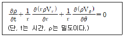
- r에 비례하는 함수
- r2에 비례하는 함수
- r에 반비례하는 함수
- r2에 반비례하는 함수
(정답률: 29%)
4과목: 기계재료 및 유압기기
61. 일정한 높이에서 낙하시킨 추(해머)의 반발한 높이로 경도를 측정하는 시험법은?
- 브리넬 경도시험
- 로크웰 경도시험
- 비커스 경도시험
- 쇼어 경도시험
(정답률: 60%)
62. 침탄, 질화와 같이 Fe중에 탄소 또는 질소의 원자를 침입시켜 한쪽으로만 확산하는 것은?
- 자기확산
- 상호확산
- 단일확산
- 격자확산
(정답률: 60%)
63. 알루미늄, 마그네슘 및 그 합금의 질별 기호중 가공 경화한 것을 나타내는 기호로 옳은 것은?
- O
- H
- W
- F
(정답률: 52%)
64. 다이캐스팅용 Al합금에 Si원소를 첨가하는 이유가 아닌 것은?
- 유동성이 증가한다.
- 열간취성이 감소한다.
- 용탕보급성이 양호해진다.
- 금형에 점착성이 증가한다.
(정답률: 37%)
65. 주철에 대한 설명으로 틀린 것은?
- 흑연이 많을 경우에는 그 파단면이 회색을 띤다.
- 600˚C 이상의 온도에서 가열 및 냉각을 반복하면 부피가 감소하여 파열을 저지한다.
- 주철 중에 전 탄소량은 흑연과 화합 탄소를 합한 것이다.
- C와 Si의 함량에 따른 주철의 조직관계를 나타낸 것을 마우러 조직도라 한다.
(정답률: 52%)
66. 결정성 플라스틱 및 비결정성 플라스틱을 비교 설명한 것 중 틀린 것은?
- 비결정성에 비해 결정성 플라스틱은 많은 열량이 필요하다.
- 비결정성에 비해 결정성 플라스틱은 금형 냉각 시간이 길다.
- 결정성 플라스틱에 비해 비결정성 플라스틱은 치수 정밀도가 높다.
- 결정성 플라스틱에 비해 비결정성 플라스틱은 특별한 용융온도나 고화 온도를 갖는다.
(정답률: 37%)
67. 다음 중 자기변태점이 가장 높은 것은?
- Fe
- Co
- Ni
- Fe3C
(정답률: 47%)
68. 황(S)을 많이 함유한 탄소강에서 950˚C 전후의 고온에서 발생하는 취성은?
- 저온 취성
- 불림 취성
- 적열 취성
- 뜨임 취성
(정답률: 66%)
69. 서브제로(sub-zero)처리를 하는 주요 목적으로 옳은 것은?
- 잔류 오스테나이트 조직을 유지하기 위해
- 잔류 오스테나이트를 레데뷰라이트화 하기 위해
- 잔류 오스테나이트를 베이나이틀화 하기 위해
- 잔류 오스테나이트를 마텐자이트화 하기 위해
(정답률: 63%)
70. 금속의 응고에 대한 설명으로 틀린 것은?
- Fe의 결정성장방향은 [0001]이다.
- 응고 과정에서 고상과 액상간의 경계가 형성된다.
- 응고 과정에서 운동에너지가 열의 형태로 방출되는 것을 응고 잠열이라 한다.
- 액체 금속이 응고할 때 용융점보다 낮은 온도에서 응고되는 것을 과냉각이라 한다.
(정답률: 44%)
71. 유압장치에서 펌프의 무부하 운전 시 특징으로 적절하지 않은 것은?
- 펌프의 수명 연장
- 유온 상승 방지
- 유압유 노화 촉진
- 유압장치의 가열 방지
(정답률: 59%)
72. 1개의 유압 실린더에서 전진 및 후진 단에 각각의 리밋 스위치를 부착하는 이유로 가장 적합한 것은?
- 실린더의 위치를 검출하여 제어에 사용하기 위하여
- 실린더 내의 온도를 제어하기 위하여
- 실린더의 속도를 제어하기 위하여
- 실린더 내의 압력을 계측하고 제어하기 위하여
(정답률: 44%)
73. 아래 기호의 명칭은?
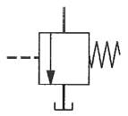
- 체크 밸브
- 무부하 밸브
- 스톱 밸브
- 급속배기 밸브
(정답률: 51%)
74. 오일 탱크의 필요조건으로 적절하지 않은 것은?
- 오일 탱크의 바닥면은 바닥에 밀착시켜 간격이 없도록 해야 한다.
- 오일 탱크에는 스트레이너의 삽입이나 분리를 용이하게 할 수 있는 출입구를 만든다.
- 공기빼기 구멍에는 공기청정을 하여 먼지의 혼입을 방지한다.
- 먼지, 절삭분 등의 이물질이 혼입되지 않도록 주유구에는 여과망, 캡을 부착한다.
(정답률: 61%)
75. 속도 제어 회로가 아닌 것은?
- 미터 인 회로
- 미터 아웃 회로
- 블리드 오프 회로
- 로크(로킹) 회로
(정답률: 62%)
76. 아래 회로처럼 A, B 두 실린더가 순차적으로 작동하는 회로는?
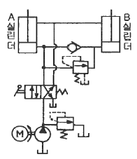
- 언로더 회로
- 디컴프레션 회로
- 시퀀스 회로
- 카운터 밸런스 회로
(정답률: 54%)
77. 유압 작동유의 구비조건으로 적절하지 않은 것은?
- 비중과 열팽창계수가 적어야 한다.
- 열을 방출시킬 수 있어야 한다.
- 점도지수가 높아야 한다.
- 압축성이어야 한다.
(정답률: 58%)
78. 유압 작동유에 1760N/cm2의 압력을 가했더니 체적이 0.19% 감소되었다. 이때 압축률은 얼마인가?
- 1.08×10-5cm2/N
- 1.08×10-6cm2/N
- 1.08×10-7cm2/N
- 1.08×10-8cm2/N
(정답률: 50%)
79. 유량 제어 밸브의 종류가 아닌 것은?
- 분류 밸브
- 디셀러레이션 밸브
- 언로드 밸브
- 스로틀 밸브
(정답률: 36%)
80. 어큐뮬레이터는 고압 용기이므로 장착과 취급에 각별한 주의가 요망되는데 이와 관련된 설명으로 적절하지 않은 것은?
- 점검 및 보수가 편리한 장소에 설치한다.
- 어큐뮬레이터에 용접, 가공, 구멍뚫기 등을 통해 설치에 유연성을 부여한다.
- 충격 완충용으로 사용할 경우는 가급적 충격이 발생하는 곳으로부터 가까운 곳에 설치한다.
- 펌프와 어큐뮬레이터와의 사이에는 체크 밸브를 설치하여 유압유가 펌프 쪽으로 역류하는 것을 방지한다.
(정답률: 53%)
5과목: 기계제작법 및 기계동력학
81. 지름 1m의 플라이휠(flywheel)이 등속 회전운동을 하고 있다. 플라이휠 외측의 접선속도가 4m/s일 때, 회전수는 약 몇 rpm인가?
- 76.4
- 86.4
- 96.4
- 106.4
(정답률: 45%)
82. 자동차가 경사진 30도 비탈길에 주차되어 있다. 미끄러지지 않기 위해서는 노면과 바퀴와의 마찰계수 값이 약 얼마 이상이어야 하는가?
- 0.122
- 0.366
- 0.500
- 0.578
(정답률: 38%)
83. 일정한 반경 r인 원을 따라 균일한 각속도 ω로 회전하고 있는 질점의 가속도에 대한 설명으로 옳은 것은?
- 가속도는 0이다.
- 가속도는 법선 방향(radial direction)의 값만 갖는다. (접선 방향은 0이다.)
- 가속도는 접선 방향(transverse direction)의 값만 갖는다. (법선 방향은 0이다.)
- 가속도는 법선 방향과 접선 방향 값을 모두 갖는다.
(정답률: 37%)
84. 다음 표는 마찰이 없는 빗면을 따라 내려오는 물체의 속력에 따른 운동에너지와 위치에너지를 나타낸 것이다. 속력이
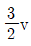
일 때의 위치에너지(A)는? (단, 에너지 보존 법칙을 만족한다.)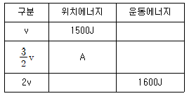
- 1400J
- 1000J
- 800J
- 600J
(정답률: 40%)
85. 다음 그림과 같이 일부가 천공된 불균형 바퀴가 미끄러짐 없이 굴러가고 있을 때, 각 경우 중 운동에너지의 크기에 대한 설명으로 옳은 것은? (단, 3가지 모두 각속도 ω는 동일하다.)
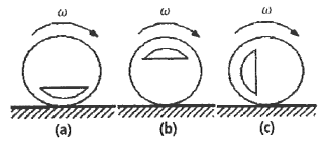
- (a) 경우가 가장 크다.
- (b) 경우가 가장 크다.
- (c) 경우가 가장 크다.
- (a), (b), (c) 모두 같다.
(정답률: 32%)
86. 그림과 같이 두 개의 질량이 스프링에 연결되어 있을 때, 이 시스템의 고유진동수에 해당하는 것은?
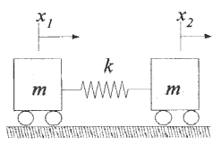
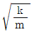
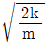
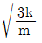
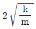
(정답률: 39%)
87. 다음 그림과 같은 1자유도 진동계에서 W가 50N, k가 0.32N/cm이고, 감쇠비가 ξ=0.4 일 때 이 진동계의 점성감쇠 계수 c는 약 몇 N·s/m인가?
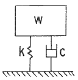
- 5.48
- 54.8
- 10.22
- 102.2
(정답률: 38%)
88. 다음 그림과 같이 스프링상수는 400N/m, 질량은 100kg인 1자유도계 시스템이 있다. 초기 변위는 0이고 스프링 변형량도 없는 상태에서 x방향으로 3m/s의 속도로 움직이기 시작한다고 가정할 때 이 질량체의 속도 v를 위치 x에 관한 함수로 나타낸 것은?
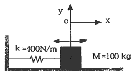
- ±(3-4x2)
- ±(3-9x2)
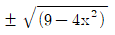
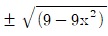
(정답률: 44%)
89. 조화 진동의 변위 x와 시간 t의 관계를 나타낸 식 x=asin(ωt+ø)에서 ø가 의미하는 것은?
- 진폭
- 주기
- 초기위상
- 각진동수
(정답률: 54%)
90. 속도가 각각 v1, v2 (v1 > v2)이고, 질량이 모두 m인 두 물체가 동일한 방향으로 운동하여 충돌 후 하나로 되었을 때의 속도(v)는?
- v1-v2
- v1+v2
- v1-v2/2
- v1+v2/2
(정답률: 43%)
91. 방전가공의 특징으로 틀린 것은?
- 전극이 필요하다.
- 가공 부분에 변질 층이 남는다.
- 전극 및 가공물에 큰 힘이 가해진다.
- 통전되는 가공물은 경도와 관계없이 가공이 가능하다.
(정답률: 42%)
92. 드로잉률에 대한 설명으로 옳은 것은?
- 드로잉률이 작을수록 제품의 깊이가 깊은 것이므로 드로이에 필요한 힘도 증가하게 된다.
- 드로잉률이 클수록 제품의 깊이가 깊은 것이므로 드로이에 필요한 힘도 증가하게 된다.
- 드로잉률이 작을수록 제품의 깊이가 낮은 것이므로 드로이에 필요한 힘도 증가하게 된다.
- 드로잉률이 클수록 제품의 깊이가 낮은 것이므로 드로이에 필요한 힘도 증가하게 된다.
(정답률: 24%)
93. 스폿용접과 같은 원리로 접합할 모재의 한쪽 판에 돌기를 만들어 고정전극 위에 겹쳐 놓고 가동전극으로 통전과 동시에 가압하여 저항열로 가열된 돌기를 접합시키는 용접법은?
- 플래시 버트 용접
- 프로젝션 용접
- 업셋 용접
- 단접
(정답률: 51%)
94. 밀링에서 브라운 샤프형 분할판으로 지름피치 12, 잇수가 76개인 스퍼기어를 절삭할 때 사용하는 분할판의 구멍열은?
- 16구멍
- 17구멍
- 18구멍
- 19구멍
(정답률: 31%)
95. 전해연마의 일반적인 특징에 대한 설명으로 옳은 것은?
- 가공면에는 방향성이 있다.
- 내마멸성, 내부식성이 저하된다.
- 연마량이 적으므로 깊은 홈이 제거되지 않는다.
- 복잡한 형상의 공작물, 선 등의 연마가 불가능하다.
(정답률: 38%)
96. 일반적으로 저탄소강을 초경합금으로 선반가공 할 때, 힘의 크기가 가장 큰 것은?
- 이송분력
- 배분력
- 주분력
- 부분력
(정답률: 49%)
97. 가공의 영향으로 생긴 스트레인이나 내부 응력을 제거하고 미세한 표준조직으로 기계적 성질을 향상시키는 열처리법은?
- 소프트닝
- 보로나이징
- 하드 페이싱
- 노멀라이징
(정답률: 50%)
98. 롤러 중심거리 200mm인 사인바로 게이지 블록 42mm를 사용하여 피측정물의 경사면이 정반과 평행을 이루었을 때, 피측정물 구배값은 약 몇 도(˚)인가?
- 30
- 25
- 21
- 12
(정답률: 34%)
99. Al합금 등과 같은 용융 금속을 고속, 고압으로 금속주형에 주입하여 정밀 제품을 다량 생산하는 특수주조 방법은?
- 다이 캐스팅법
- 인베스트먼트 주조법
- 칠드 주조법
- 원심 주조법
(정답률: 44%)
100. 다음 중 소성가공에 속하지 않는 것은?
- 압연가공
- 선반가공
- 인발가공
- 단조가공
(정답률: 48%)
부재의 장주 길이가 2m이므로, 이 길이에 걸쳐서 압축응력이 일정하게 분포되어 작용한다고 가정할 수 있다. 이때 부재의 단면이 작은 쪽에서부터 큰 쪽으로 이동하면서 압축응력이 변화하게 된다. 이 변화하는 압축응력을 고려하여 부재의 장주에 작용하는 압축력의 합을 구해야 한다.
부재의 단면이 작은 쪽에서부터 큰 쪽으로 이동하면서 압축응력은 일정하게 증가하므로, 부재의 중간 지점에서의 압축응력은 P/200이다. 이때 중간 지점에서의 압축력은 부재의 중심축을 지나는 수직선과 수평선으로 이루어진 직각삼각형의 빗변에 해당하는 힘이다. 이 직각삼각형의 밑변과 높이는 각각 부재의 단면의 가로와 세로 길이인 20cm와 10cm이므로, 중간 지점에서의 압축력은 (20²+10²)^(1/2) x P/200 = 0.2236P이다.
이와 같이 부재의 단면이 작은 쪽에서부터 큰 쪽으로 이동하면서 압축응력을 고려하여 부재의 장주에 작용하는 압축력의 합을 구하면 다음과 같다.
0.2236P + 0.2236P + 0.2236P = 0.6708P
따라서 세장비는 0.6708P의 힘을 견딜 수 있어야 한다. 보기에서 정답이 "69"인 이유는, 이 문제에서는 단위를 cm과 m을 혼용하여 사용하였기 때문에 단위 변환을 해주어야 한다. 부재의 장주 길이가 2m이므로, 이를 cm 단위로 변환하면 200cm이 된다. 따라서 세장비는 0.6708P/200 = 0.003354P의 힘을 견딜 수 있어야 한다. 이 값은 소수점 이하를 버리면 0.003P로, 이를 100으로 곱하면 0.3P가 된다. 따라서 세장비는 30%의 효율을 가진다는 것을 의미하므로, 보기에서 정답이 "69"인 것이다.